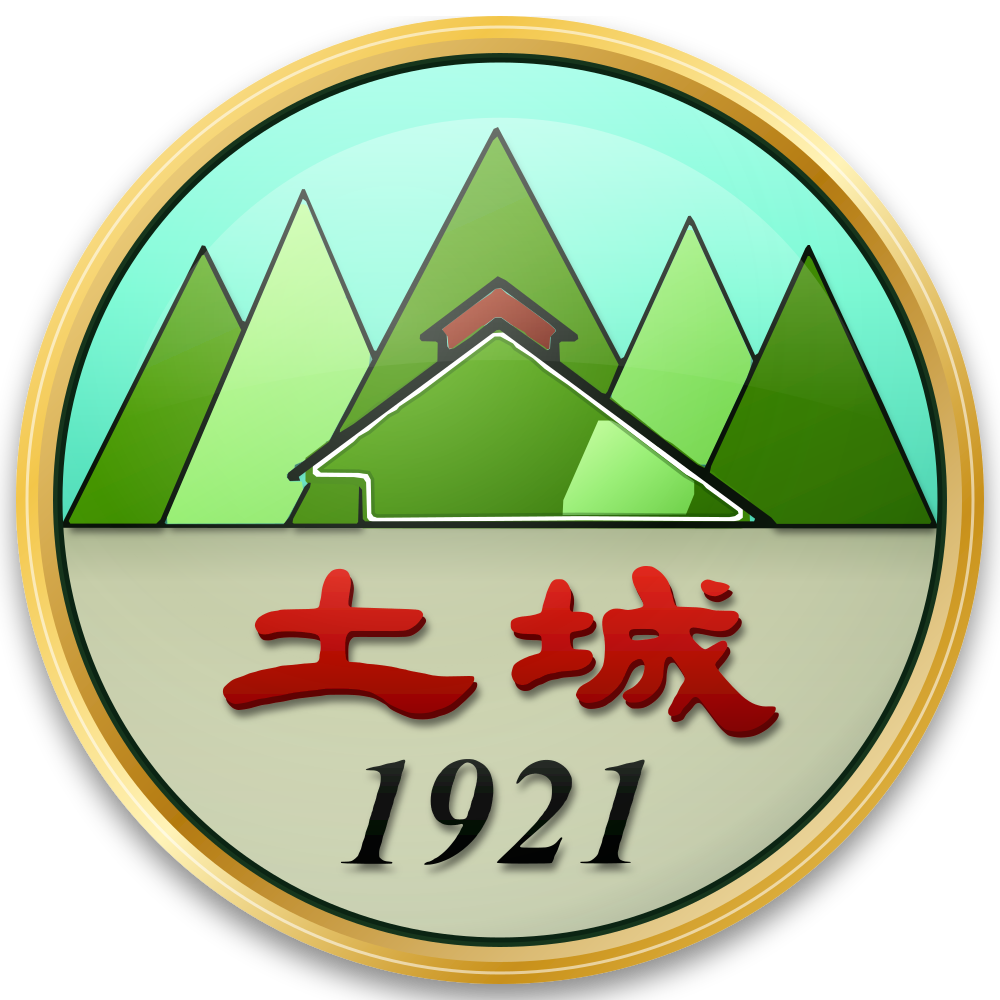

南投縣草屯鎮土城國民小學Tucheng English Day 活動手冊
運動會英語日 · 《土城國小英語護照》闖關 · 6 間教室 × 6 個遊戲 × AI 聽你說英文
設計理念孩子的旅程時間表教室設備各關台詞家長參與部長參訪備援隱私上線網址總表
1. 設計理念：一本護照，飛遍六座城市
護照本身就是「登機證」。每個孩子拿到一張貼在護照裡的 QR 登機卡，六間教室是六個「登機門」，城市名稱取自護照第 39 頁中級集點卡上的城市（Tokyo、Sydney、Paris、Cairo、Vancouver、San Diego）。導遊就是護照裡的 機器貓頭鷹歐力 Ollie-Bot。
- 題目刻意簡單，每個孩子都開得了口：題目是低、中年級課本的程度（只有一個句型例外，見下方）。每一題都一樣：老師問一句短問題 → 螢幕上有答案的圖片和一句短句 → 孩子只要說出一個字（答案字）。AI 聽到答案字，遊戲就往前跑（賽車加速、方塊落下、全場跟著節拍動起來……）；AI 沒聽到時，老師按 ✓。每關 4–6 題，再加最後一題。
- 只有兩個等級，同一套遊戲：QR 卡裡記錄年級。1–2 年級是初級：答案字直接印在句子裡，看著唸就可以。3–6 年級是中級：答案字先是空格「?」，等提示時間到或按 🔊 才出現。提示時間在 ⚙「幾秒後提示」設定，預設 9 秒（看圖填空的題目會多等四成，約 13 秒）；時間到時，電視也會用真人錄音示範一次。老師可隨時在畫面上方切換初級／中級。
- 單字來源：只用護照第 1–6 關：老師決定，孩子要說的答案字全部取自護照第 1–6 關，讓孩子活動前只要複習這六關（見下方複習表）。第 4 關拍照時喊的 Cheese! 只是拍照口號，不是護照單字。
- 唯一高於中年級的句型：第 5 關的 How's the weather?。依我們找到的一份彰化縣課程計畫，這個句型在翰林版五年級（五上 Unit 1）才教。孩子只要看著天氣的圖片，說出一個天氣的字（例如 sunny）就可以。
- 不用傳統印章：過關時螢幕會「蓋」一個全息動畫印章，並用解碼動畫揭曉一個 秘密字母，孩子寫在 QR 卡的格子裡。六個字母拼成 FRIEND，到「終點登機門」解碼後說出 “We are friends!”，領取「環遊世界英語小達人」獎狀。
- 🎟 刮刮卡換獎品：每過一關，孩子用手指在觸控螢幕上刮開銀色區塊，露出點數，寫在 QR 卡上。終點的獎狀會印出總點數，憑獎狀兌換獎品（詳見刮刮卡與獎品）。
- 歐力說的英文是真人錄音：電視說的每個英文字，預設都是 Wikimedia Commons 上的真人錄音（共 196 個，來源見 credits.html）。句子是用這些錄音一個字一個字唸，唸到哪個字，哪個字就亮起來；歐力的台詞也會出現在字幕上。沒有錄音的字（例如孩子的名字）電視不唸，只出現在字幕上。瀏覽器的電腦語音預設關閉（見發音說明）。
- 學校識別：每個畫面都有校名「南投縣草屯鎮土城國民小學」和校徽。校徽是依學校自己的校徽圖檔重新描繪成 3D 向量圖，設計沒有更動。每個角色、交通工具、物品的圖案上，都別著一個小小的「土城」徽章。
- 讓家長聽見孩子：每關結束時，電視會播放剛剛錄下的孩子英文原聲（只存在那台電腦），家長會聽到自己孩子說英文。
- 宣傳 AI 特色：孩子說話時，對話框右邊有即時聲紋；AI 一聽懂，畫面正上方跳出「🤖 AI 聽懂了！」和 AI 聽到的字（例如 “tiger”），秀給家長看；大廳 Mission Control 即時統計「今天說出的英文句子」。
- 用護照解謎：🧩 句子拼拼看（點 2–3 張單字卡排出短句，再唸出來）＋ 🛂 護照密碼（翻紙本護照找編號單字，只用第 1–6 關的字，第一個字母就是密碼），最後解出的 FRIEND 剛好就是護照第 111 號單字。
- 大螢幕觸控＋3D 原創圖案：每關都能用手點、刮、按；所有動物、交通工具、身體部位、天氣、食物、彩蛋、機器貓頭鷹歐力都是本活動原創的 3D 亮面公仔圖，第 5 關盲盒是真正會轉動的 3D 立方體。
- 全班一起說：每位孩子說完最後一句，螢幕放大這句話，同組同學和家長一起大聲唸，越大聲煙火越多。
活動前複習建議：護照第 1–6 關
請老師帶孩子複習護照第 1–6 關。下表是每一關護照內容會在哪一關遊戲出現：
| 護照 | 在哪一關遊戲複習 |
|---|---|
| 第 1 關 | 第 1 關 Turbo Talk Kart（交通工具）、第 3 關 Pet Hatch（動物） |
| 第 2 關 | 第 2 關 Pixel Craft（家人） |
| 第 3 關 | 第 4 關 Beat Party（身體部位）；hungry（第 5 關最後一題）、thirsty（第 6 關最後一題） |
| 第 4 關 | want（第 3 關最後一題）、run（第 6 關） |
| 第 5 關 | 第 5 關 Mystery Box（天氣）；hot（第 1 關最後一題） |
| 第 6 關 | 第 6 關 Sports Day Obby 的動作 walk、climb、ride、fly 和 I can …；第 3 關中級加問 Can it fly?（It can fly! ／ It can't fly.） |
為什麼選這六種遊戲形式
目前沒有單一、權威的「兒童最愛遊戲前六名」排行；不同調查方法結果不同。較一致的是 Minecraft、Roblox 長期名列前茅，Fortnite 在部分調查領先（參考：Kids' Choice Awards 最愛電玩紀錄、The Insights Family 2026 英國兒童調查、2026 Roblox 熱門遊戲整理）。台灣方面，兒盟 2025 調查指出國小生約八成會玩遊戲，但沒有公布國小生的遊戲排名（兒福聯盟）。因此我們取孩子最熟悉的 遊戲「類型」，全部是原創設計，不使用任何遊戲的角色或美術：
| 關卡 | 遊戲類型（孩子熟悉的玩法） | 本活動的原創遊戲 |
|---|---|---|
| 1 | 賽車（如 Mario Kart 類） | Turbo Talk Kart：點螢幕左右換車道吃星星；畫面出現交通工具的圖，老師問 What is it?，孩子說出來（bus）＝加速超車；最後一題 Are you hot? → Yes! |
| 2 | 方塊建造（如 Minecraft 類） | Pixel Craft：孩子點發亮的方塊，方塊落下蓋出一位家人的像素頭像，老師問 Who is he?／Who is she?，孩子說出是誰（father；畫面上的句子是 He's my father.）；家人有 father、mother、grandpa、grandma、brother、sister；最後一題 Is this your family? → Yes! |
| 3 | 孵蛋收集寵物（Adopt Me、Grow a Garden、Steal an Egg 類，2026 年最熱門玩法） | Pet Hatch：點蛋三下敲裂，孵出有稀有度光芒的寵物，老師問 What is it?，孩子說出動物（tiger）；中級再加問 Can it fly?（答 Yes! / No!，bird 和 duck 會飛；說哪個都過關）；最後一題 Which one do you want?，孩子點選最喜歡的寵物，說 I want the cat. |
| 4 | 節奏舞蹈（如 Just Dance 類） | Beat Party：大圖卡出現身體部位，老師問 What's this?，孩子說出來（nose），全場跟著節奏摸那個部位（Touch your nose!），孩子點 DJ 鼓墊打節奏；最後 Photo time! → Cheese! 拍合照 |
| 5 | 開箱驚喜（盲盒／寶箱） | Mystery Box：孩子親手點開盲盒，天氣從盒子裡衝出來（太陽、雨、雲、風、雪），老師問 How's the weather?，孩子說出天氣（sunny；畫面上的句子是 It's sunny.）；天氣有 sunny、rainy、cloudy、windy、snowy；最後一題 Are you hungry? → Yes! |
| 6 | 障礙跑酷（如 Roblox obby 類） | Sports Day Obby：畫面出現動作的圖，老師問 What can you do?，孩子說出動作（walk；畫面上的句子是 I can walk!），再用力按大按鈕通過障礙。五個障礙依序是：走過小河上的橋（walk）、爬牆（climb）、跑道（run）、自行車道（ride）、飛過懸崖（fly）；最後一題 Are you thirsty? → Yes!，再站上頒獎台舉起獎盃 |
2026 年 Roblox 的熱門排行（依總造訪數）以 Brookhaven RP、Steal a Brainrot、Blox Fruits、Adopt Me!、Grow a Garden 為首，熱門機制是「收集—孵化—成長」與稀有度揭曉（參考：Udonis 2026、Roblox Charts 2026/11）。第 3、5 關的孵蛋與開箱即採用這類機制。
所有圖案都是本活動原創繪製（3D 亮面公仔風格，程式繪製在 js/art.js），沒有使用任何遊戲角色或第三方圖庫，不會有著作權問題。
大螢幕觸控
每一關都能用手在大螢幕上玩：賽車點左右換車道、方塊點一點蓋出家人頭像、孵蛋點三下、節奏點鼓墊、盲盒點箱子打開、跑酷按大按鈕，再加上句子拼拼看點單字卡、刮刮卡用手指刮。說話（英文對話）仍是每一步的核心，觸控讓孩子覺得「是我在玩」。
2. 孩子的旅程
- 報到：領取貼好 QR 登機卡的護照（用 cards.html 列印）。卡上每一關有一個格子：上格寫秘密字母，下格寫刮刮卡點數。
- 進教室：在電視旁的掃描機刷 QR（同組 5–6 人可以一起先刷，系統會排隊）。螢幕出現 Hello, Amy!，歐力說 Hello!。來賓沒有 QR 卡，按 ⭐ 貴賓體驗 Guest。
- 👋 暖身：老師按 START。老師先問暖身問題 What's your name?，孩子說 I'm Amy.，說出自己的名字就可以（快速模式略過）。
- 闖關：每一回合：畫面出現答案的圖片 → 老師說上排的 Teacher 問題 → 孩子說出下排 You 句子裡的答案字（初級看得到字，中級是「?」）→ AI 聽到就過；聽不到時老師按綠色 ✓ 說得好（或鍵盤 Enter）。孩子卡住時，按 🔊（或 H）聽真人示範。
- 🎉 大家一起說：孩子說完最後一句，螢幕把句子放大，同組同學和家長一起大聲唸一次，越大聲煙火越多（快速模式略過）。
- 🧩 句子拼拼看：遊戲後，螢幕出現打亂的單字卡（2–3 張，例如 It's／a／bus.、He's／my／father.、I／can／walk.），孩子依順序點單字排好，再把句子唸出來（快速模式略過）。
- 🛂 護照密碼：螢幕顯示「找到第 26 號單字（第2關·第5頁）」，孩子翻開自己的紙本護照找到這個字（例如 father）並說出來，它的第一個字母（F）就是這一關的秘密字母。只會出護照第 1–6 關的字（初級只出第 1–3 關）。號碼由電腦隨機抽，不一定和前一位相同。
- 🎟 刮刮卡：螢幕出現刮刮卡，孩子用手指把銀色區塊刮開，露出這一關的點數。
- 過關：全息印章＋星星＋秘密字母＋點數。孩子在 QR 卡第 N 格的上格寫字母、下格寫點數；電視播放孩子剛才的英文原聲。按 NEXT 換下一位。
- 終點登機門（大廳）：刷 QR → 輸入或說出秘密字 FRIEND → 說 “We are friends!” → 獎狀（可列印）。獎狀上印有刮刮卡總點數和「憑這張獎狀兌換獎品」，家長拍照。
🎟 刮刮卡與獎品
- 公平模式（預設）：每個孩子的六張刮刮卡是 10、10、15、15、20、30 點，每個人的順序不一樣。闖完六關的孩子，總點數都是 100 點。
- 驚喜模式（在 ⚙「刮刮卡點數」切換）：每張是 10／20／30／50 點，每個孩子的總點數不一樣。
- 點數是用孩子的座號和關卡算出來的，所以每一台電視和終點登機門算出來都一樣，不需要網路。六間教室和終點的電腦，請在 ⚙ 設成同一種模式。
- 孩子把字母（上格）和點數（下格）寫在 QR 卡那一關的格子裡；卡片上另有「Total 合計」欄。
- 終點登機門的獎狀會印出總點數和「憑這張獎狀兌換獎品」。沒有設定同步網址時，獎狀印的是六關全部的點數；有同步時只算已完成的關卡。只闖了幾關的孩子，請以 QR 卡上寫的點數為準。
3. 時間表（28 位學生）
建議分 5 組（6、6、6、5、5 人），6 間教室輪站，每輪有一間空出來當緩衝或讓家長體驗。
| 模式 | 每人每關 | 每組每關（5–6 人） | 6 輪＋移動 |
|---|---|---|---|
| 標準（⚙ 每位孩子回合數：標準）：暖身＋遊戲 4–6 題和最後一題＋大家一起說＋句子拼拼看＋護照密碼＋刮刮卡 | 約 3–4 分鐘（估計） | 約 15–24 分鐘（估計） | 約 1.5–2.5 小時，另加換教室的時間（估計） |
| 快速（⚙ 每位孩子回合數：快速 3 回合）：遊戲 3 題和最後一題＋護照密碼＋刮刮卡（略過暖身、大家一起說、句子拼拼看） | 約 2 分鐘（估計） | 約 10–12 分鐘（估計） | 約 1–1.2 小時，另加換教室的時間（估計） |
以上都是估計，不是實測。自動測試裡每一題都立刻通過，一位孩子跑完一關約 1.5 分鐘（各關 1–2 分鐘不等）；真正的時間要看孩子開口的速度。每組、每輪的時間是用「每人時間 × 5–6 人 × 6 輪」算出來的。畫面上方的 ⏱ 會顯示這位孩子已經玩了多久、還有幾人排隊。
建議：若活動時間只有 90 分鐘，請全部電腦設定「快速」。時間不夠時，也可以每組只闖 3–4 關（字母不齊沒關係，終點登機門可由老師按 Enter 或「老師協助解碼」；點數以 QR 卡上寫的為準），或讓同組孩子一起說（AI 一樣會聽到）。也可以兩位孩子一組輪流說，等待的孩子幫忙翻護照找密碼。
4. 每間教室的設備
| 項目 | 說明 |
|---|---|
| 觸控大電視 | 用 Chrome 或 Edge 開 station.html?gate=1～6，按 F11 全螢幕。若電視內建 Android，也可用其 Chrome。 |
| 麥克風（重要） | 電視內建麥克風離孩子太遠、教室吵，強烈建議接無線手持麥克風或 USB 會議麥克風，讓孩子拿著說，AI 才聽得準。 |
| QR 掃描機 | 必須是 2D 掃描機（1D 雷射條碼槍讀不到 QR）。USB 或藍牙皆可，設定為「鍵盤模式」。即使電腦開著中文輸入法也能讀。 |
| 網路 | AI 語音辨識使用瀏覽器內建服務，需要網路。沒網路時遊戲照跑，改由老師按 ✓。 |
| 喇叭 | 讓孩子和家長聽得到真人發音示範、遊戲音效與孩子的原聲重播。 |
| Webcam（選配） | 第 4 關最後的 “Cheese!” 合照、終點獎狀上的大頭照，以及沒有掃描機時用相機掃 QR。 |
開場前 10 分鐘檢查
- 開網址 → 瀏覽器詢問麥克風時按「允許」。
- 按右上 ⚙ → 「🎤 測試麥克風」，說話時下方音量條會動。
- 用老師的測試卡刷一次，玩一回合，確認右上角出現綠燈「AI 正在聽」。
- 按一次 🔊 聽示範，確認喇叭有聲音；電腦關閉螢幕保護與睡眠；音量調到後排家長聽得到。
- 六間教室和終點的電腦，⚙ 的「刮刮卡點數」要設成同一種模式（預設都是公平模式，沒改過就不用動）。
5. 各關老師台詞（自動由遊戲內容產生）
👉 可直接列印 teacher-cards.html：每關一張 A4「關主一頁卡」，貼在電視旁。按電視畫面上方的 📋，也會顯示這一關的台詞。
👋 暖身問題（每關一開始，標準模式；快速模式略過）：每一關都是 What's your name? → I'm Amy.（護照 37）。孩子說出自己的名字就可以。原本的 How old are you? 和 How are you? 已經拿掉，因為數字是護照第 7 關、fine／happy 是第 10 關。
下表方便老師事先熟悉。每一題：老師問左欄的問題，畫面上有答案的圖片和第二欄的句子，孩子只要說出第三欄的答案字，AI 聽到這個字就過關。初級的畫面直接印出答案字；中級是空格「?」，提示時間到或按 🔊 才出現。黃底是最後一題；數字是護照單字編號。每位孩子只會遇到表中的幾題，由電腦隨機抽。
所有問句裡都沒有 AI 會接受的答案字（例如問 Can it fly? 時答案是 Yes / No，問 Are you hot? 時答案是 Yes），所以老師發問的聲音不會被當成孩子的答案。電視自己播放示範時，AI 也不會把喇叭的聲音算進去。
遊戲回合之後，每一關都還有：🎉 大家一起說、🧩 句子拼拼看、🛂 護照密碼、🎟 刮刮卡（見第 2 節）。
6. 讓家長一起玩
- 第 4 關 Beat Party：孩子當老大。孩子說出身體部位（例如 nose），螢幕出現 Touch your nose!，家長和老師都要跟著節奏摸鼻子——最好笑、最好拍照的一關。最後老師說 Photo time!，孩子喊 Cheese! 拍大合照。
- 第 5 關 Mystery Box：家長可以陪孩子一起看盒子裡衝出什麼天氣，但天氣的字要讓孩子說。
- 🎉 大家一起說：每位孩子說完最後一句，請家長和同組同學跟著螢幕一起大聲唸。
- 原聲重播：每關結束播放孩子剛剛說的英文，請關主老師提醒家長「聽！這是你的孩子」。
- 大廳 Mission Control：control.html 的「📊 Live Board」放在大廳電視，家長看得到每個孩子點亮了幾個城市。
7. 教育部長參訪建議路線（約 8 分鐘）
- 大廳 Mission Control（1 分鐘）：校長介紹「今天孩子說出的英文句子數」即時累計，說明這是學校英語 × AI 特色。
- 第 4 關 Beat Party（3 分鐘）：請一位孩子當老大，說出身體部位（例如 nose），全場連同部長一起跟著節奏摸鼻子（Touch your nose!）——部長照做的畫面最有新聞性。
- 第 1 或第 3 關（2 分鐘）：展示 AI 即時字幕「🤖 AI 聽到：…」。第 1 關孩子一說對，賽車立刻加速；第 3 關孩子點蛋三下孵出寵物，再說出牠是什麼。
- 終點登機門（2 分鐘）：請部長頒發「環遊世界英語小達人」獎狀（上面有刮刮卡總點數），孩子說 “We are friends!”
8. 備援方案
| 狀況 | 處理 |
|---|---|
| 沒有網路／AI 沒反應 | 右上角顯示「老師判定」。孩子說完，老師按 ✓ 或 Enter，遊戲照常。 |
| 主網址（GitHub）打不開 | 改開同一關的備用網址（Claude，需登入老師的 claude.ai 帳號）。遊戲內容相同；備用網址沒有麥克風與相機，孩子說完老師按 ✓／Enter。兩個網址見 網址總表 與關主一頁卡。 |
| 掃描機不能用 | 按「📷 相機掃描」用 webcam 掃，或「👆 手動選擇」點座號。 |
| 電視當機 | 重新整理頁面即可；孩子的字母和點數都寫在 QR 卡上，不會遺失。 |
| 教室電視都不能用 | 老師開 phone.html，用手機掃孩子 QR，手機直接顯示秘密字母和刮刮卡點數並登記。 |
| 刮刮卡刮不開／螢幕沒有觸控 | 老師按 Enter，刮刮卡會自己刮開；沒有人刮時，大約 14 秒後也會自己刮開。也可以用滑鼠按住拖曳。 |
| 按 🔊 沒有聲音 | 按鈕旁出現「請老師示範」時，表示這個字沒有真人錄音，請老師親口唸一次（目前遊戲裡電視要唸的字都有真人錄音）。其他情況請檢查喇叭和音量。 |
| 孩子說話有困難或需要特別協助 | 老師可直接按 ✓ 讓孩子用點、刮、按的方式參與；也可以在 ⚙ 設定把「幾秒後提示」調短，讓答案字和示範早一點出現。每個孩子都能完成闖關、拿到字母、點數與獎狀。 |
| 孩子太害羞 | 讓孩子先按 🔊 聽示範（真人發音）、跟著說；每一題都只要說一個字就過。可請同組同學一起說。 |
9. 隱私與安全
- QR 卡只包含：座號、年級、英文名字。沒有中文姓名、沒有照片。
- 孩子的錄音只存在那台電腦的記憶體裡，用來當場重播，關掉網頁就消失；第 4 關合照與終點獎狀上的大頭照只顯示在螢幕上（獎狀可列印），不儲存、不上傳。沒有相機時獎狀改放歐力圖案。
- 語音辨識由瀏覽器的語音服務處理（Chrome／Edge 會把聲音送到瀏覽器廠商的雲端辨識）。如果不希望使用，在 ⚙ 把「AI 語音辨識」關掉，改由老師判定。
- 部分 Android 系統的觸控大屏無法同時「錄音」與「語音辨識」，程式會自動把麥克風讓給語音辨識（此時不會播放孩子的原聲）。
- 名單只存在各台電腦（localStorage）。若設定 Google 試算表同步，資料只寫進學校自己的試算表，內容為英文名、座號、年級、關卡與 AI 聽到的文字。
10. 上線方式
- GitHub Pages（建議）：本專案已附自動發佈設定：每次推送到 GitHub，網站會自動更新到
gh-pages分支並上線（若第一次未自動開啟，到 Settings → Pages 選 Deploy from a branch → gh-pages /(root) 即可）。網址為https://imacipadtw-lang.github.io/123456/english-quest/。使用 https 網址，瀏覽器才會允許麥克風與相機。 - 斷網也能玩：每台電腦活動前先用 https 網址開過一次所有要用的頁面，程式會自動把頁面、圖案、發音存在電腦裡；當天網路斷掉，遊戲照常（只有 AI 語音辨識需要網路，改由老師按 ✓）。程式更新後，請把頁面重新整理兩次。
- 離線備份：下載整個專案 ZIP，解壓後用 Chrome 開
index.html也能玩（AI 辨識仍需要網路）。 - 六間教室匯整（選用）：照
apps-script/Code.gs檔頭說明建立 Google Apps Script，把網址貼到每台電腦的 ⚙「同步網址」。
發音：真人錄音與正確性檢查
- 電視說的每個英文字，預設都是 Wikimedia Commons 的真人錄音，共 196 個。每個檔案的錄音者、授權、下載時間都列在 credits.html，可以逐一試聽。
- 句子是用這些單字錄音一個字一個字唸，唸到的字會亮起來；歐力的台詞同時出現在字幕上。
- windy 找不到美式英語的真人錄音，用的是澳洲英語錄音；rainy 和 pink（遊戲已經不用）是英式英語錄音；其餘都標示為美式英語。
- 已做的正確性檢查（都是程式做的）：
- 每個檔案的 SHA-1 檢查碼都和 Wikimedia Commons 公布的一致。
- 每個檔案都是該單字自己的英文 Wiktionary 條目所連結的錄音，或是慣用檔名
En-us-單字.ogg。 - 用自動語音辨識程式（CMU PocketSphinx）把 196 個檔案聽過一遍：182 個辨識出來就是該單字。
- 遊戲裡電視會唸、但機器沒有確認的有 10 個字：an、are、grandpa、i、is、it's、pig、snowy、the、touch（機器聽成別的字，例如把 an 聽成 hand）。其中 grandpa 被聽成 grandma；再比對一次聲音的形狀，比較像 grandpa，但還沒有人用耳朵聽過。
- 瀏覽器的電腦語音預設關閉。要用時，在 ⚙「歐力的聲音」改成「電腦語音」；使用時會標示「電腦語音」。
11. 網址總表（每個畫面兩個網址）
主網址＝GitHub（功能完整）；備用網址＝Claude（主網址出狀況時用）。可列印的版本：links.html。
| 畫面 | 主網址（GitHub） | 備用網址（Claude） |
|---|